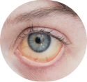
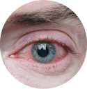

When your eyes dont get enough rest at night, there is less moisture throughout the day. As a result, it is possible to experience itchiness and dryness of the eyes, as well as a damaged eyes are characterized by yellow.
Damaged Eye

